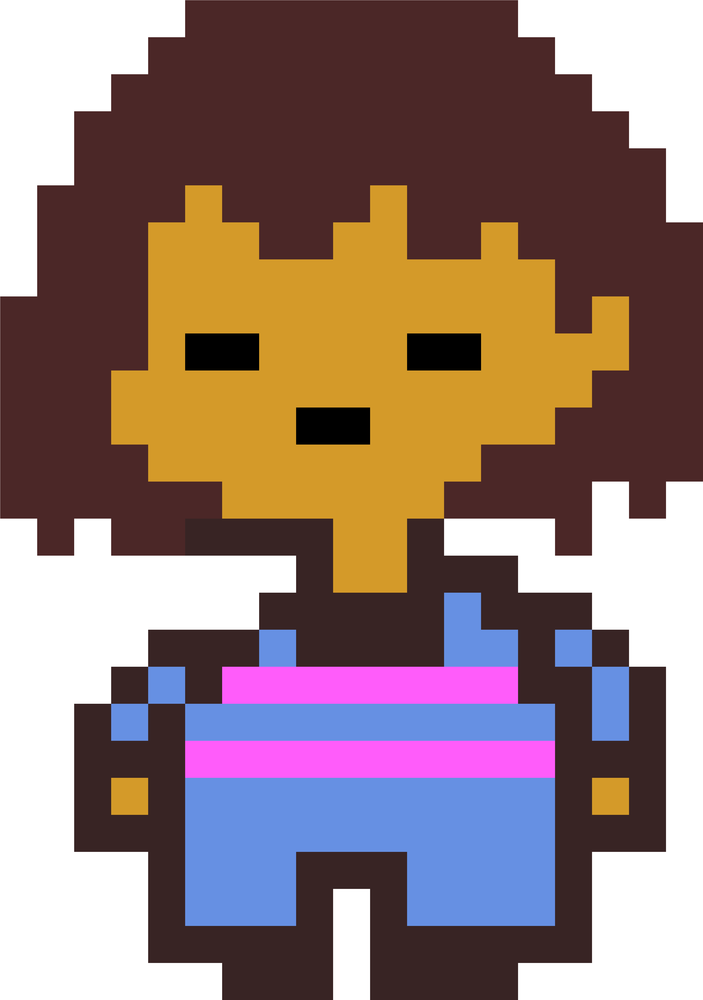
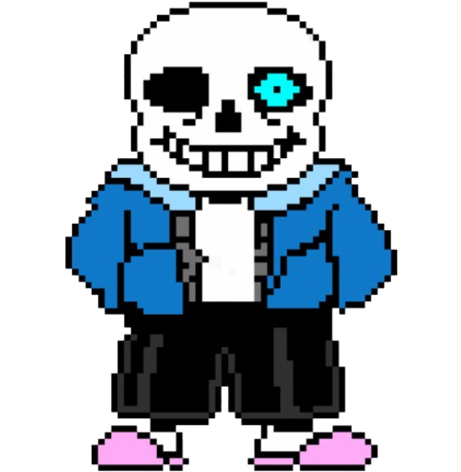
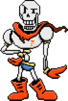
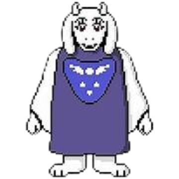
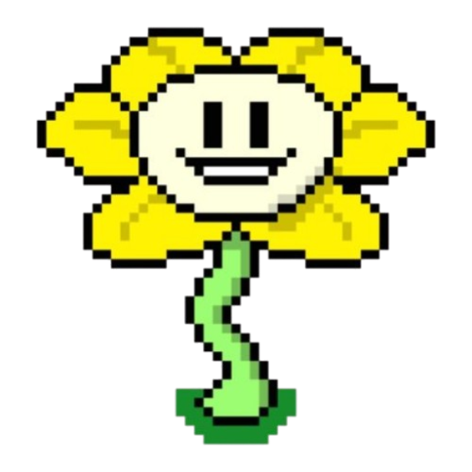
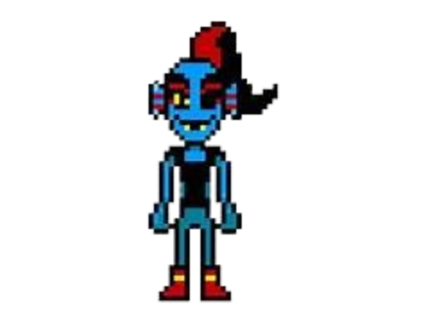
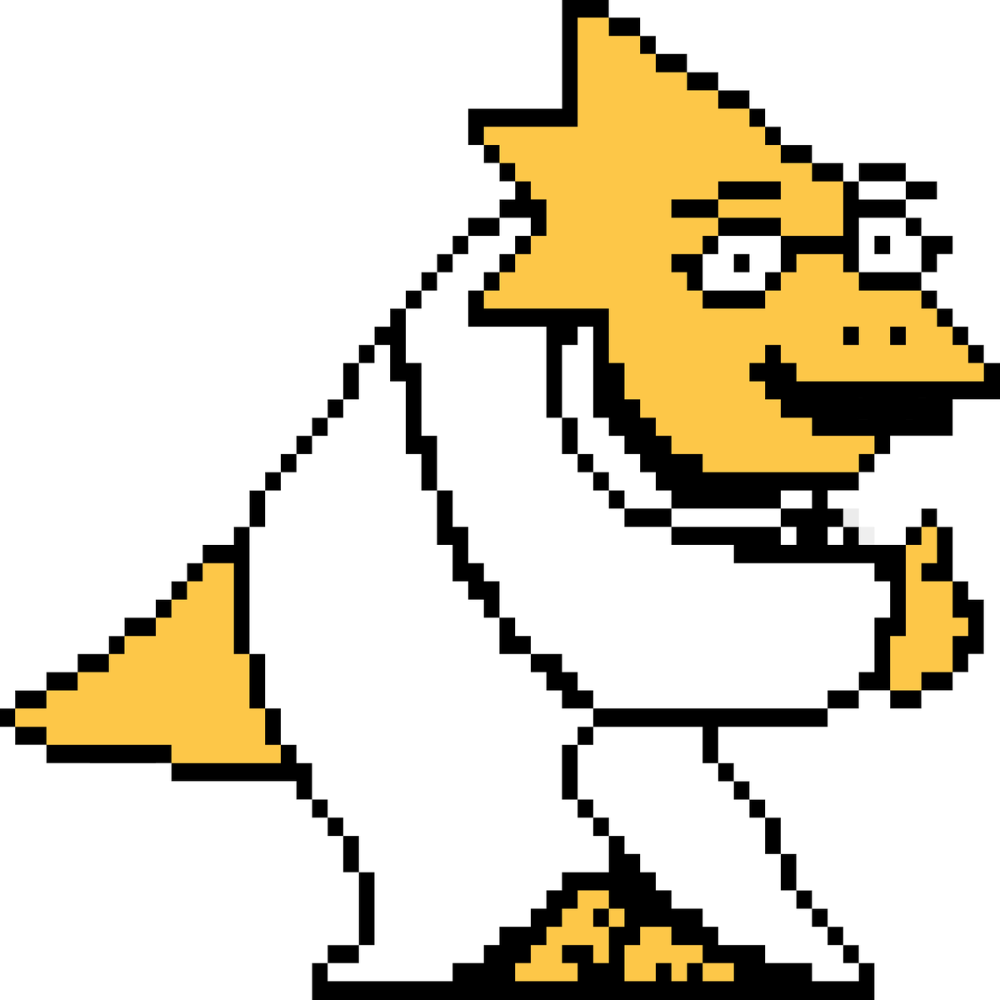
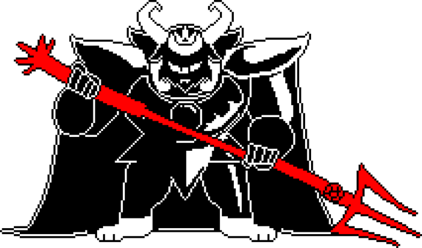

É uma criança humana de origem desconhecida que cai no Subterrâneo. Suas escolhas definem o rumo da história.
É um esqueleto preguiçoso e engraçado que vive em Snowdin. Apesar da aparência, é muito inteligente e poderoso.
É o irmão de Sans,mora em Snowdin e sonha em entrar na Guarda Real do Rei. Papyrus é otimista e adora espaguete e enigmas.
É uma monstra com aparência semelhante a de uma cabra, vive nas RUÍNAS e age de forma protetora para Frisk, a criança humana.
É uma flor falante do Subterrâneo com intenções malignas. Flowey, há muito tempo, já foi uma alma inocente chamada ASRIEL DREEMURR.
É a chefe da Guarda Real, vive em Waterfall e luta com coragem e honra. Undyne adora treinar e é muito leal.
É a tímida cientista real. Mora no laborátorio e é fã de anime. Alphys criou Mettaton.
É o REI do Subterrâneo, de origem monstro. ASGORE coleta almas humanas para libertar seu povo do Subterrâneo.
